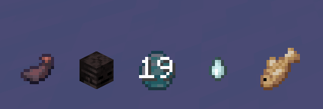

Sorcery
Sorcery is the art of channeling Spiritual Energy to manifest powerful, supernatural techniques. Once a player has unlocked a Sorcery Type, they gain access to a new set of abilities and a dedicated user interface.
Sorcery System
Magic is a core power in the mod, closely tied to the Enchanted Blades. Using magic requires a resource called Spiritual Energy (SE).
General Architecture
- Each Sorcery type is its own distinct class.
- Abilities are divided into 6 slots:
PRIMARY,SECONDARY,UTILITY,SPECIAL,SUPPORTIVE_1,SUPPORTIVE_2. - Abilities have different activation types:
CLICK(instant use),CHARGE(hold to power up),CHANNEL(sustain the effect),TOGGLE(switch on/off).
The Sorcery HUD
When you are in Combat Mode and have a Sorcery equipped, a new HUD element appears to the left of your hotbar, displaying your 6 available ability slots.

- Icons: Each icon represents a different ability.
- Cooldown: A grey overlay and a countdown timer will show when an ability is on cooldown.
- Resource Cost: If you lack the resources (SE, Kuro Fish, etc.) to use an ability, its icon will blink red.
- Charge Meter: Some abilities can be charged by holding the key. A vertical bar will appear over the icon to show the charge level.
Using Abilities
To use your Sorcery abilities, you must first switch from your standard combat moveset to your Sorcery moveset.
- Use Sorcery Mode (Default:
R): Holding this key will switch your keybinds. - Primary Ability (LMB): Use your main offensive spell.
- Secondary Ability (RMB): Use your secondary spell. Often, this can be held down to charge the ability for a more powerful effect.
- Utility Ability (Shift): Use your utility or movement spell.
- Supportive Skill 1 (Default:
Z): - Supportive Skill 2 (Default:
X): - Special Skill (Default:
G):
Available Sorcery Types
Your Sorcery is determined by the Enchanted Blade you align with, or by a rare, innate talent.